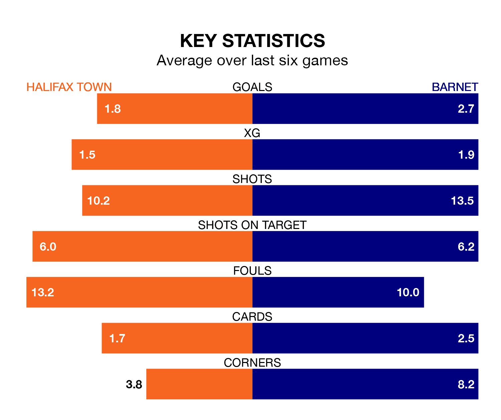

Barnet face a challenge to maintain their high-scoring form away against a tight Halifax Town defence on Saturday.
With 85 goals in 44 games, Barnet are the second-highest scorers in the National League ahead of the 3pm kick-off at the Shay Stadium.
They face a Shaymen side who have scored 53 in 42 matches, but conceded only 46 goals, putting them joint-second among the league's tightest defences – only Southend United have conceded fewer goals.
Barnet are second in the table after 44 games, of which they have won 24 and drawn eight, earning 80 points.
Halifax are six places behind the Bees in eighth, with 18 wins and 12 draws putting them on 66 points.
In the last 10 years, Halifax and Barnet have played each other on 13 occasions. They won four each, and they drew five times.
On average, the Shaymen scored 1.4 goals and the Bees 1.3 in those matches.
Their last meeting was on September 23, when they played out a 0-0 draw.
Town are in good form in the National League, with four wins and a draw from their last six games.
With three wins and three draws over that period, the visitors' form is slightly worse – they have taken 12 points from 18, compared to the Shaymen's 13.
Halifax's last match was on Saturday, a 2-0 win against Kidderminster Harriers, with Max Wright getting the goals for the Shaymen.
Barnet drew 1-1 with Bromley last time out, on Tuesday, with Idris Kanu on the scoresheet.
Updated: 10:01 (UTC), 12/04/24